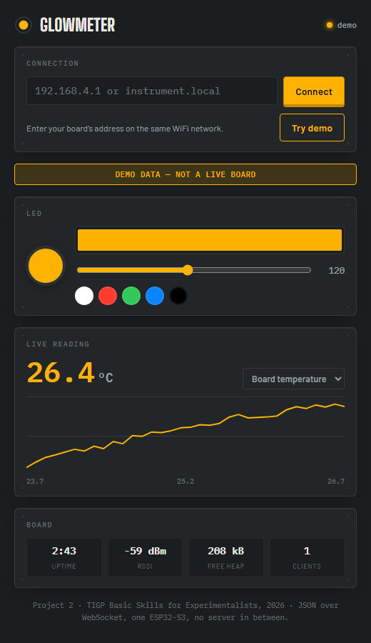

Project 2 · TIGP Basic Skills for Experimentalists, 2026
A phone web app that reaches across the room's WiFi to an ESP32-S3 and back: set the colour and brightness of its onboard LED, then watch a live measurement stream in twenty times a second, drawn as a strip chart. No native app, no cloud service, no server in between — the phone and the board talk directly, in plain JSON over one WebSocket.

The app never runs its own logic on the board — every value shown is read straight off the 20 Hz status broadcast, and every control is a command the board acknowledges or refuses. Full protocol in firmware/PROTOCOL.md.
| Direction | Message | What happens |
|---|---|---|
| App → board | {"cmd":"led","args":{"r","g","b"}} | Sets the RGB LED colour |
| App → board | {"cmd":"brightness","args":{"value"}} | Sets brightness, 0–255 |
| Board → app | {"type":"status", …} · 20×/s | Reports the live LED state, temperature, uptime, WiFi signal, free heap, client count |
class-board-2026 — the LED and status protocol it already implements is everything this app needed; only the phone app (host/pwa/) is new.